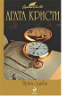

Это последний роман о приключениях супругов Томми и Таппенс Бересфорд (а также последнее произведение, написанное Агатой Кристи). Почтенный возраст не помеха детективам-любителям - им предстоит разгадать зашифрованное в старой книге послание о давней смерти агента британской контрразведки.